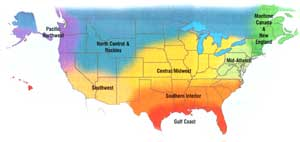

Canada Maritimes/New England
After frosts arrive, enjoy the cool weather as you complete the fall tasks - planting garlic and bulbs, cleaning up the garden and building the compost pile. This time of year, fruit trees need protection from mice and voles; wrap their trunks with hardware cloth, metal screening or plastic tree guards. As outdoor activities slow, turn your attention to cleaning seed crops, and shelling peas, soybeans and dry beans. In late fall, spread manure except in the area reserved for next year’s carrots, which don’t need all that nitrogen. Colder days are good for clearing ski trails or winterizing the chicken coop. Make your own kim chi and sauerkraut, or fruit butters and jams. Make the butters and jams from berries frozen in bulk in July and August, when time was at a premium. The long baking time for fruit butter warms the house nicely, and the delicious butters are a favorite holiday gift. Mid-November brings the Leonid meteor showers, and longer nights to enjoy them. - Roberta Bailey, FEDCO Seeds, Waterville, Maine.
Mid-Atlantic
Our first frost is usually mid-October, so gather tomatoes, peppers, eggplants, beans, squash and okra before it hits. Sow cover crops of kale, mustards and turnips in areas that have just been cleared; your chickens will enjoy these greens in late winter. If the frost catches you with sweet potatoes unharvested, cut all of the vines back to the ground immediately to keep the crop from going bitter. Use fabric row covers to protect greens right before frost, and carrots and beets before the temperature dips to 24 degrees. After the frost, thin strawberries and start a new bed with the thinnings. Compost and weed asparagus, raspberries, grapes, strawberries and blueberries, but hold your best compost back for spring seedlings. Pull up and drain hoses and irrigation supplies, inventory seeds, and start taking stock of successes and shortfalls so next year can be your best ever. - Cricket Rakita, Southern Exposure Seed Exchange, Mineral, Va.
Southern Interior
October is a great time to plant spinach in the South; here are some tips for successful growing: To help speed germination, place seeds in the refrigerator in a moistened medium for one week prior to planting. Sow a half inch deep in rows 15 to 18 inches apart, in full sun with rich, well-drained soil. Young plants should be thinned to 4 to 5 inches. Harvest when leaves are 6 to 8 inches long. Spinach likes a soil pH that is as close to neutral as possible; if you don’t know your soil’s pH, have it tested at your local county Extension office - or do it yourself with kits available from mail-order catalogs or at local garden centers. Most plants, and vegetables in particular, need a slightly acidic soil (near 6.5). Use lime to raise the pH, and sulfur to lower it. - Lori Hardee and Karen Park Jennings, Park Seed Co., Greenwood, S.C.
Gulf Coast
If you haven’t already started planting, then get with it! Cool-weather-loving vegetables, herbs and flowers are anxious to stretch their hungry roots and take advantage of our best gardening season. Crops to direct seed include beets, carrots, mustard, turnips, radicchio and radishes, and herbs such as chives, dill and fennel. Transplants may work better for lettuce, cabbage, Chinese cabbage, broccoli and cauliflower - protect them from sun and wind with fabric row covers. Don’t neglect the orchard. There may not be much to pick this time of year, but a copper fungicide on peaches, plums and nectarines will knock off the leaves and reduce infection from bacterial canker. After trees and vines are fully dormant consider using an old favorite on the dormant plants - lime/sulfur. It’s too harsh to use during the growing season, but it can help control overwintering insects and diseases. Anthracnose on southern bunch grapes such as ‘Blanc du Bois’ has been devastating, but lime/sulfur looks promising to control it. - Bill Adams, Burton, Texas.
Central/Midwest
Morning frost delicately edges the leaves and highlights intricately formed seed heads. A chill in the air adds urgency to the harvest. If winter squash, gourds, or dried beans and peas are threatened by a freeze, bring them into a dry, warm, well-ventilated area for two weeks to cure. Then keep the squash in a cool, dry place and check it periodically for signs of spoilage. The beans are ready to store in containers when they rattle inside their shells. Dry the gourds until their seeds rattle - then they can be oiled or lacquered to enhance the colors and patterns. If your weather is still warm, and you want to continue gardening until the snow comes, try seeding lettuces, greens, peas and baby carrots in a cold frame or mini-greenhouse tunnel. With this region’s unpredictable weather, you may be able to have a fresh, homegrown salad with your Christmas dinner! - Connie Dam-Byl, William Dam Seeds Ltd., Dundas, Ontario.
North Central & Rockies
Time to tidy things up and prepare for the snowy blanket that will soon cover our gardens. With luck, fall cover crops have sprouted enough to protect bare soil from the sun and wind. If not, mulch those spots with yard rakings so the soil is not left exposed through the winter. The leaves can be removed in the spring to allow the soil to warm. Next on the list is proper marking. Brussels sprouts, parsnips, carrots, onions and even some oriental mustard greens can be harvested after the first snows. Marking their locations with tall sticks will help you find them under a blanket of snow. Check for broccoli side shoots now - in many years, a nice little bonus crop comes on at this time. I used to mow outlying wildflower and grass areas in the fall, but now I leave everything standing until spring, when mowing creates a nice mulch layer that promotes reseeding. - Bill McDorman, Seeds Trust, High Altitude Gardens, Hailey, Idaho.
Pacific Northwest
Fall is garlic planting time, and this year, why not add some top-setting onions such as ‘Egyptian Walking’ or ‘Catawissa’. Plant the onions 5 to 6 inches apart and 1 inch deep in rows spaced 12 inches apart. Next summer, harvest the underground bulbs using a garden fork and pick clusters of hazelnut-sized bulblets on the seed stalks for future crops. Both are delicious! A few seeds of corn salad scattered around the salad bed will become fresh greens early next spring. Perennial herbs establish easily from October plantings. Clean up garden debris, making sure all the potatoes are harvested to keep late blight and scab from gaining a foothold. Check soil pH and add lime if needed. A mulch of leaves will keep weeds from getting off to a fast start in early spring. Add coffee grounds (often free from local coffee shops) and you’ll really attract the worms to your garden. Enjoy the fall harvest - and share the surplus bounty with your local food bank. - Rose Marie Nichols McGee, Nichols Garden Nursery, Albany, Ore., and Josh Kirschenbaum, Territorial Seed Company, Cottage Grove, Ore.
Southwest
October provides ample time for harvesting and curing vegetables, and for concocting big pots of interesting curry squash soups or fall root mixtures, including parsnips, carrots, potatoes and onions, to fill our kitchens and our stomachs. When the fall roots and squashes come out of the field, garlic, hardy greens and many cover crops can go in. A u-bar digger (sometimes called a broadfork) comes in handy not only for double-digging beds, but for greater depth and spacing for garlic plantings. Adding 6 to 12 inches of straw mulch on top of garlic plantings produces great results. Oilseed radish, rye and winter wheat can be seeded into open plots to provide cover and protect the soil while also preventing any early spring weeds. Cutting back perennials allows us to get a better jump on the next growing season and stay in the fields that much longer! - Erica Renaud, Seeds of Change, Santa Fe, N.M.
|
 |
|
|